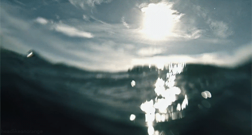
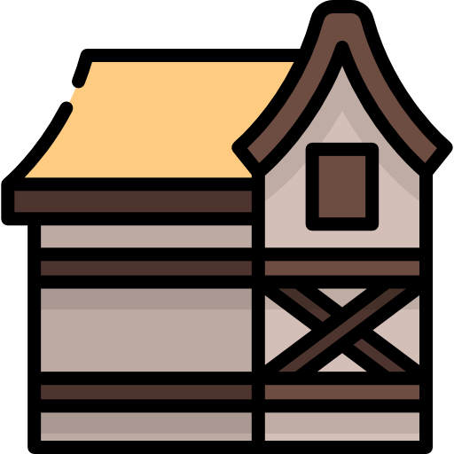
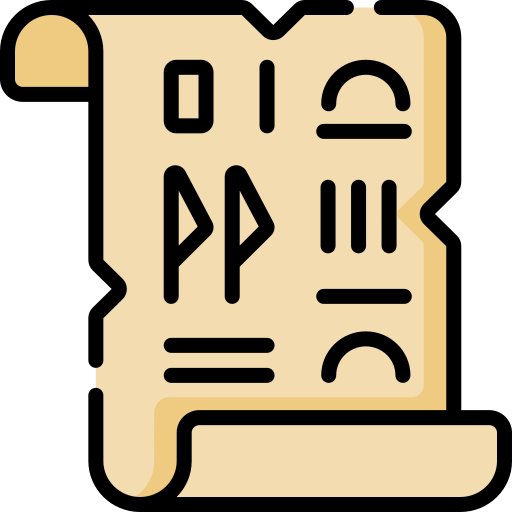

<li>
    <div class="sidenav-img">
        
    </div>
</li>
<li class="tooltipped" data-position="bottom" data-tooltip="Beranda">
    <a class="waves-effect" href="#" >
        
        <span href="#kisah">Beranda</span>
    </a>
</li>
<li class="tooltipped" data-position="bottom" data-tooltip="Ringkasan Kisah">
    <a class="waves-effect" href="#kisah" >
        
        <span href="#kisah">Ringkasan Kisah</span>
    </a>
</li>
<li class="tooltipped" data-position="bottom" data-tooltip="Fakta Sejarah">
    <a class="waves-effect" href="#fakta">
        
        <span href="#fakta">Fakta Sejarah</span>
    </a>
</li>
<li class="tooltipped" data-position="bottom" data-tooltip="Dalil Shahih">
    <a class="waves-effect" href="#dalil">
        
        <span href="#dalil">Dalil Shahih</span>
    </a>
</li>
<li class="tooltipped" data-position="bottom" data-tooltip="Pesan Moral">
    <a class="waves-effect" href="#pesan">
        
        <span href="#pesan">Pesan Moral</span>
    </a>
</li>
<li class="tooltipped" data-position="bottom" data-tooltip="Sumber Referensi">
    <a class="waves-effect" href="#referensi">
        
        <span href="#referensi">Sumber Referensi</span>
    </a>
</li>